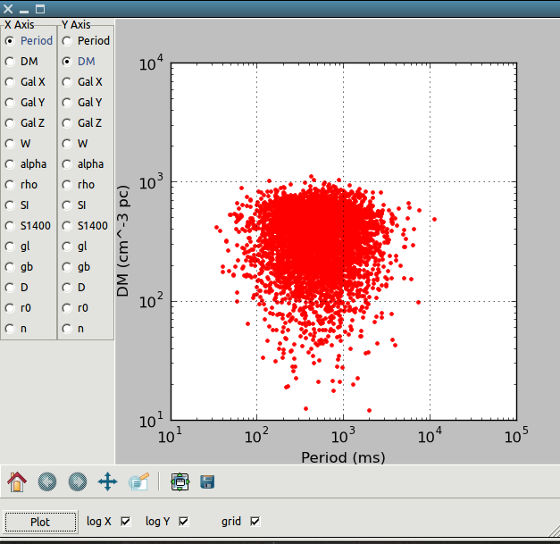

Tutorial - Basic Usage¶
This page will outline a very simple pipeline for basic population simulations with PsrPopPy.
Generate Population Model¶
Population models are generated using the populate script (installed
automatically with pip). A common use would be to generate a population of
normal pulsars using the Parkes Multibeam Pulsar Survey as a basis. This
survey detected 1038 pulsars (at last count). Using default radial distribution,
period and luminosity models, we can generate such a population using the command:
populate -n 1038 -surveys PMSURV
This will then run for a few minutes, until the model PMSURV survey
has detected 1038 pulsars. The file populate.model will be produced
by default, which is a pickled
population object.
If, instead, you wanted to use the Lyne & Manchester (1998) electron
distribution, and for whatever reason wanted to store the output in the
file pop_lm98.model, then we could run:
populate -n 1038 -surveys PMSURV -dm lm98 -o pop_lm98.model
A different output file will then be produced, where the population uses the new simulation parameters.
Simulate a Pulsar Survey¶
Once you’ve generated a pulsar population model, the dosurvey script
can be used to run the model through a past, present or future, pulsar
survey (as specified in files in the survey directory — see
_model-survey-files).
For example, say we want to take the population model we just created,
pop_lm98.model, and estimate from this how many pulsars would be detected
in a putative LOFAR pulsar survey. This can be simply done using:
dosurvey -f pop_lm98.model -surveys LOFAR
Visualising a Pulsar Model¶
There are two ways to visualise the populations generated by either
populate.py (.model) or dosurvey.py (.results). To plot
basic histograms of various parameters, use the view.py script:
python view.py -f <model> -p <parameter>
Here <parameter> could be period, dm, or several other options,
as outlined in _view_doc. Assuming the Matplotlib
package is installed, this will generate a histogram which can then be
saved or printed as necessary.
To create a histogram of the logarithm of the selected parameter, use:
python view.py -f <model> -p <parameter> --logx
If you have the wxPython plugin working (seems on newer macs this is a non-trivial
piece of software to install — using macports is recommended) then use wxView.py
to create scatter plots of various parameters (see screenshot below).
